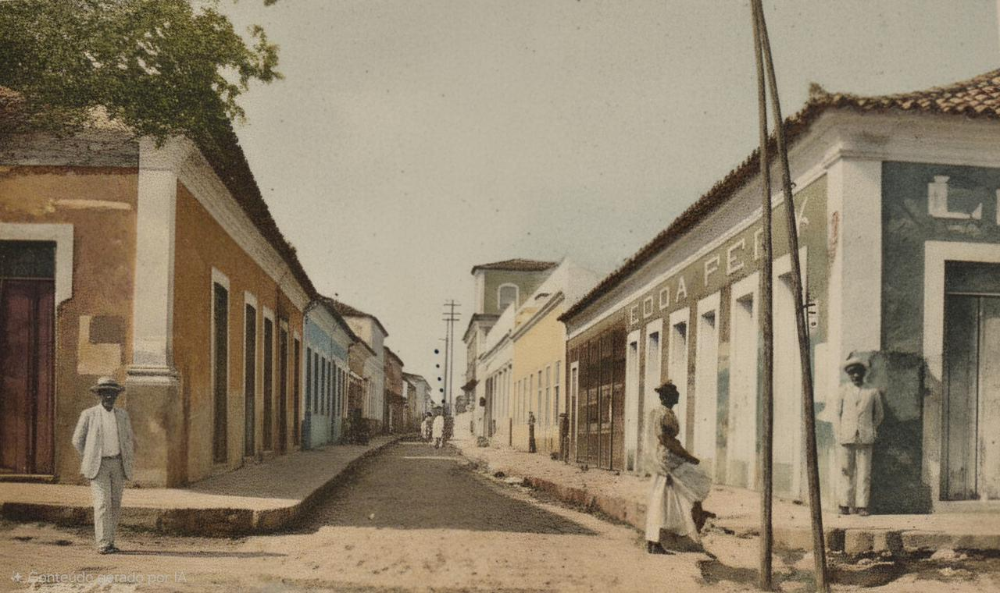

Memórias que atravessam gerações
Um olhar sobre o valor afetivo e documental das imagens antigas de Parnaíba.
Ler mais
Um olhar sobre o valor afetivo e documental das imagens antigas de Parnaíba.
Ler mais
Um mergulho nas memórias da cidade através de fotografias antigas e paisagens simbólicas.
Ler maisExplorando as transformações arquitetônicas da cidade ao longo do tempo.
Ler mais